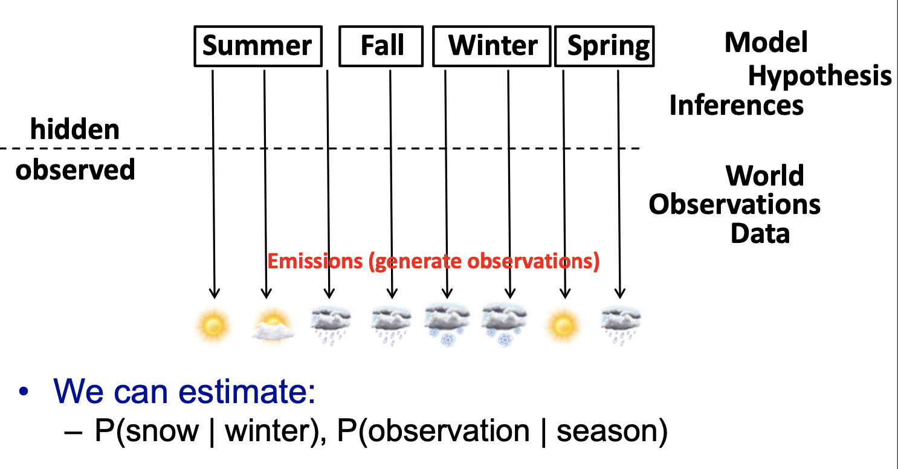
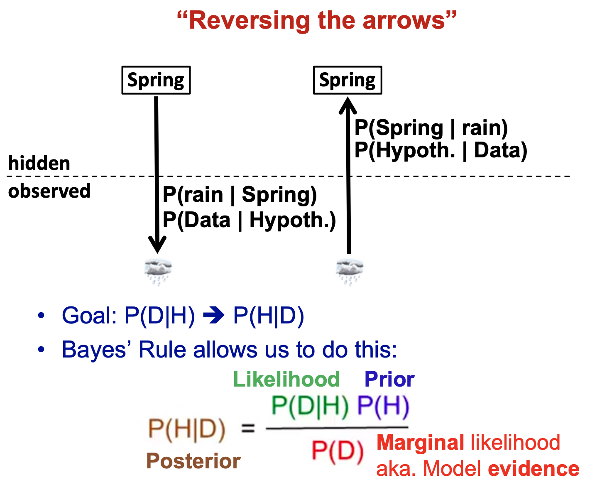
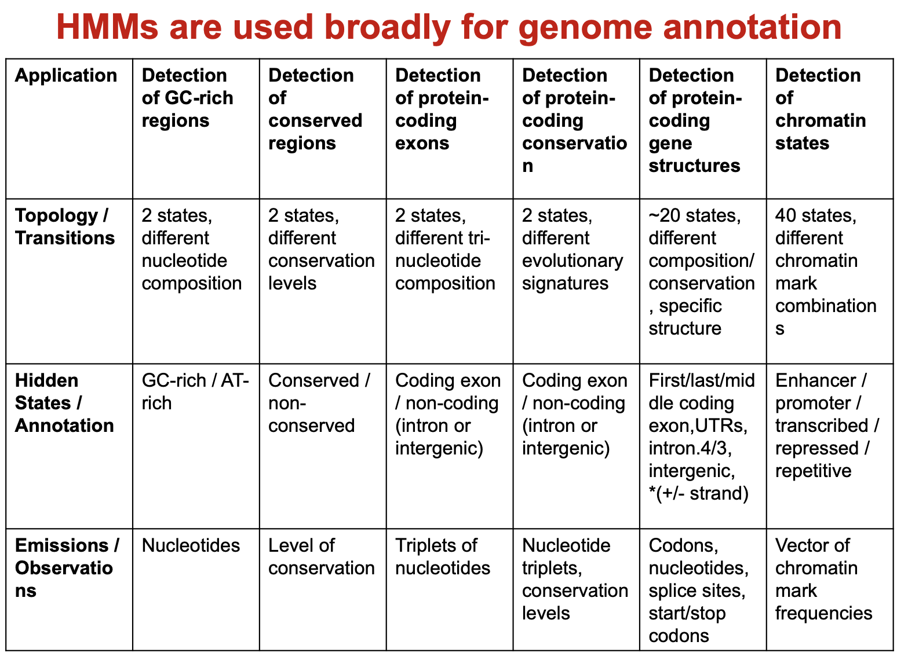
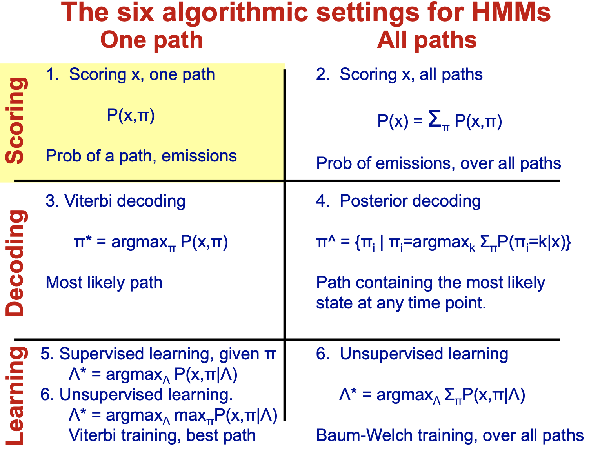
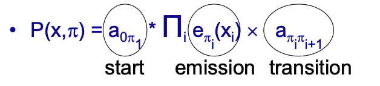

home..
Lecture04 hmms1_2_ evaluation, parsing, posterior decoding, learning, hmm architectures
zying / January 2023
Lectures
ML in genomics
HMM basic, evaluation, parsing, posterior decoding
Observation, Models, Bayes’ rule, Bayesian inference
 通过观测每天天气推断所处季节时，observations指的是能够直接观测获取到的数据（每天的天气），可以推断处于某个季节观测到某种天气的概率 该模型构建的目的就是通过P(observation|season) 推断P(season|observation) 可以通过Bayes’ Rule计算得：

Markov Chains and Hidden Markov Models
- 马尔可夫链主要特点是无记忆性，同HMM差别在于所有状态均可以被观测到，不存在隐藏状态
- HMM存在隐藏状态，可以通过observation推断隐藏状态
- 通过HMM detecting GC-rich regions
- HMMs在基因组注释方面有广泛应用：

Calculating joint probability of one (seq, parse) P(x, $\pi$)

- 计算某一条路径的联合概率
- 以全是P，全是B，部分为P序列为例说明
- Joined prob. : $P(X,\pi)=P(X|\pi)P(\pi)=P(emissions|path)\times P(path)$
Viterbi algorithm (choosing optimal path)
- 类似DP的方法，根据给定状态序列$\pi^*$寻找具有最大total joint prob. 的最优路径$P[X,\pi]$

- 定义$V_k(i)=$Prob. of most likely path through state $!\pi_i=k$
Forawrd algorithm